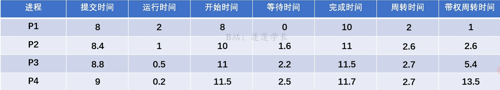
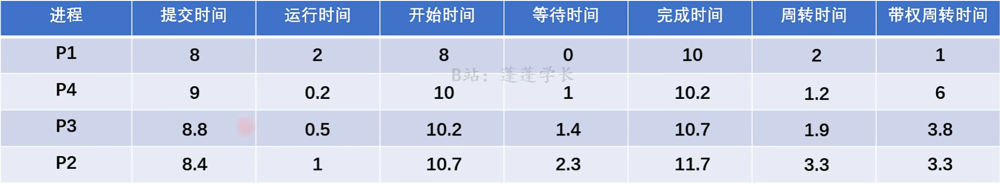
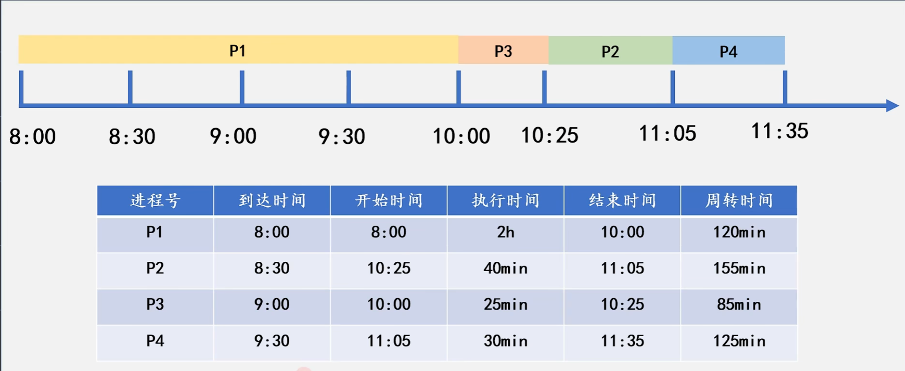
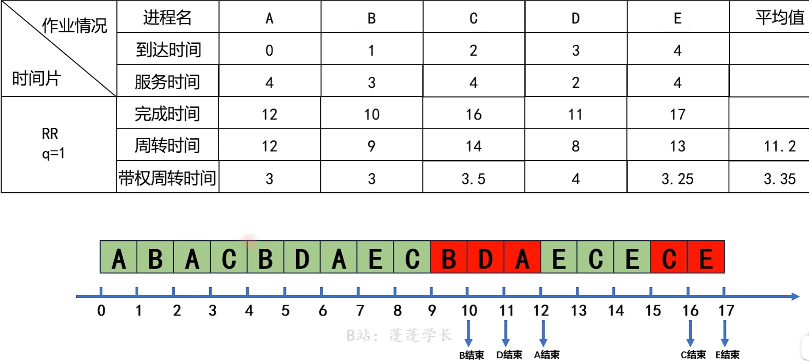

进程与线程
进程
进程引入
进程定义
进程特征
进程组成
进程控制块
程序段
数据段
进程状态
状态转换
进程控制
创建 终止 阻塞 唤醒 挂起 激活
进程通信
进程同步(重点)
概念
同步与互斥的实现
互斥锁
当mutex为0时，阻塞。
当mutex为1时，唤醒。
信号量
整型信号量
wait()可简写为P()
signal()可简写为V()
1
2
3
4
5
6
7
8
| wait(S){
While(S<=0);
S--;
}
signal(S){
S++;
}
|
记录型信号量
1
2
3
4
5
6
7
8
9
10
11
12
13
14
15
16
17
18
19
20
| typedef struct{
int value;
struct process *L;
}semaphore;
void wait(semaphore S){
S.value--;
if(S.value < 0){
block(S.L);
}
}
void signal(Semaphore S){
S.value++;
if(S.value <= 0){
wakeup(P);
}
}
|
管程
进程同步问题
- 找出进程
- 找出临界区
- 找同步关系
- 定义信号量，写伪代码
生产者-消费者问题
1
2
3
4
5
6
7
8
9
10
11
12
13
14
15
16
17
18
19
20
21
22
23
24
| semaphore mutex=1;
semaphore empty=n;
semaphore ful1=0;
producer(){
while (1){
produce an item in nextp;
P(empty);
P(mutex);
add nextp to buffer;
V(mutex);
V(full);
}
}
consumer(){
while(1){
P(full);
P(mutex);
remove an item from buffer;
V(mutex);
V(empty);
consume the item;
}
}
|
哲学家进食问题
读者-写者问题
吸烟者问题
线程
概念
比较
属性
状态与转换
组织与控制
实现方式
多进程模型
CPU调度
概念
层次与联系
实现
目标
进程切换
调度算法(重点)
做题方法：
-
先依次列出：到达，服务，开始，等待，完成，周转，带权周转时间项。
-
按照算法，推出运行顺序，画出数轴。
-
计算时间。
公式
开始时间：由提交时间，运行时间，上一个作业的开始时间计算
等待时间：调度开始时间−提交时间
完成时间：服务时间+开始时间
周转时间：完成时间−提交时间
带权周转时间：周转时间÷服务时间
先来先服务FCFS

运行顺序：按照到达顺序。
缺点：只考虑了作业的等待时间，忽略了作业运行时间。
短作业优先SJF

运行顺序：每次调度时，运行时间短的优先。
缺点：只考虑了作业的运行时间，忽略了作业等待时间。
高响应比优先
高响应比：Rp=服务时间等待时间+服务时间=1+服务时间等待时间

时间片调度算法
维护一个队列，将到达的进程加入队列，每次取队列头部进程。时间片结束后，若未完成，则将进程加入队列中，再加入新到达的进程。

优先级调度算法
运行顺序：按照优先级排序。
实时调度
死锁
概念
死锁预防
死锁避免(重点)
- 计算Available
- 填表
| 进程 |
Work |
Allocation |
Need |
W+A |
| P0 |
|
|
|
|
| P1 |
|
|
|
|
| P2 |
|
|
|
|
| P3 |
|
|
|
|
| P4 |
|
|
|
|
- 写安全序列
-
Request(A,B,C)≤Available(A1,B2,C3)
-
Request(A,B,C)≤Need(A2,B2,C2)
-
求安全序列
死锁检测
死锁解除